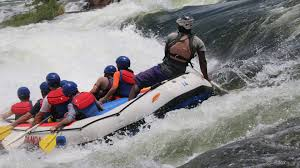
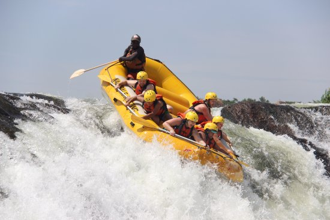
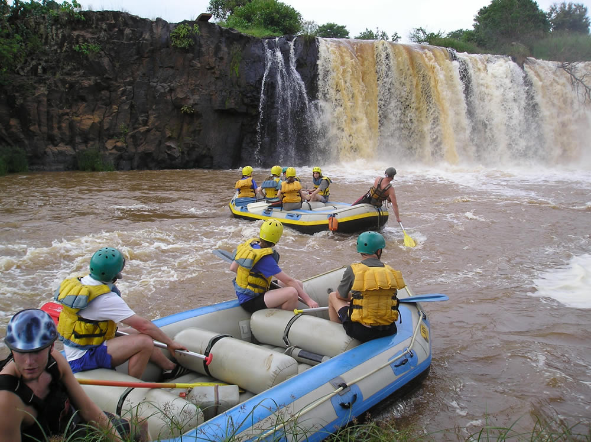

Contact Us for Booking
Ready for your next adventure? Contact us to book your trip!
Contact UsOur Thrilling Adventures
Adventure 1: Jinja Rafting Expedition
Experience the magic of the river at twilight with our Sunset Rafting Experience. Watch as the sun dips below the horizon, casting a golden glow over the water. This immersive journey combines the beauty of nature with the thrill of rafting, creating an unforgettable evening on the river.
Adventure 2: Murchison Falls Expedition
Embark on an exhilarating white-water rafting adventure on the Victoria Nile, the heart of Murchison Falls National Park! Navigate the Nile's mighty rapids, surrounded by breathtaking landscapes teeming with wildlife. This adventure is perfect for thrill-seekers and nature lovers alike.
Adventure 3: Sipi Expedition
The Sipi River, a ribbon of sparkling water cascading down Mount Elgon's slopes, beckons adventure seekers and nature enthusiasts. Embark on a captivating journey that blends invigorating hikes, cultural discoveries, and the thrill of kayaking on the gentle currents of the Sipi River.
Available Trips
| Adventure Name | Duration | Difficulty Level | Price |
|---|---|---|---|
| Jinja Expedition | 4 days | Difficult | $1500 |
| Murchison Falls Expedition | 5 days | Moderate | $1200 |
| Sipi Expedition | 6 days | Easy | $1000 |